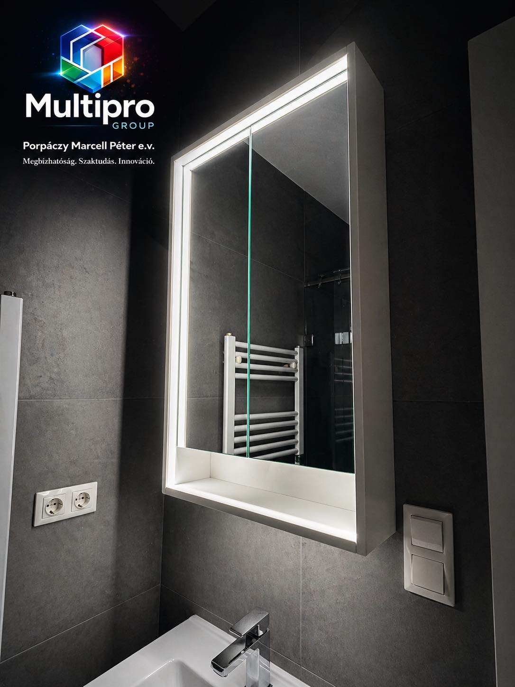
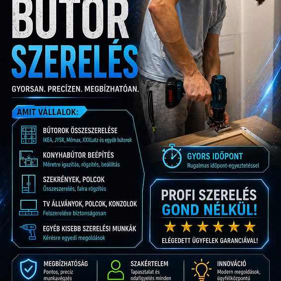

01
Villanyszerelés
Lakossági és kisipari villanyszerelési munkák — konnektorcserétől új áramkör kiépítéséig, hibakeresés és karbantartás. Szabványos, biztonságos kivitelezés.
Villanyszereléstől a rendezvényhangosításig, festéstől a bútor szereléséig — Porpáczy Marcell Péter egyéni vállalkozó precíz, megbízható szakmunkája Szombathelyen és a környékén.
Sokoldalúság, ami nem felszínesség — minden tevékenységemben igényes, precíz munkát adok. Válassza ki, miben segíthetek.
Lakossági és kisipari villanyszerelési munkák — konnektorcserétől új áramkör kiépítéséig, hibakeresés és karbantartás. Szabványos, biztonságos kivitelezés.
Kisebb-nagyobb események professzionális hangosítása, technikus jelenléttel.
Lakásfestés, tatarozás, igényes felújítás — tisztaságra ügyelve.
Lapra szerelt bútorok precíz, gyors összeszerelése IKEA, JYSK és társai.
Kisebb lakatos és karbantartási feladatok, fémszerkezeti javítások.
Újratelepítés, frissítések, memória- és SSD-bővítés — gyorsan, szakszerűen.
Kisvállalkozói marketing tanácsadás és kivitelezés — közösségi média, kreatívok, lokális hirdetések.
Szombathelyen születtem, és ma is itt élek. Már gyerekként vonzott a villamosság világa, és az évek során ez az érdeklődés folyamatosan bővült: minden új területet, szakmát és gyakorlati megoldást szívesen ismertem meg.
Sokoldalúságomnak köszönhetően ma már több területen mozgok otthonosan — villanyszereléssel, rendezvényhangosítással, festéssel, marketinggel és különféle ezermester jellegű munkákkal foglalkozom. Hiszem, hogy a modern világban az alkalmazkodóképesség és a széleskörű tapasztalat kiemelt érték, ezért folyamatosan fejlesztem a tudásomat.
20 évesen alapítottam meg a vállalkozásomat azzal a céllal, hogy ügyfeleim számára megbízható, precíz és sokrétű szolgáltatást nyújthassak. Munkám során kiemelten fontos a pontosság, az igényesség és az, hogy minden feladatot a lehető legjobb minőségben végezzek el.
Tartom a megbeszélt időpontot, a megbeszélt árat, és a megbeszélt minőséget.
Több területen is gyakorlati tapasztalat, folyamatos önképzés.
Modern eszközökkel, modern megközelítéssel a klasszikus szakmákban is.
— Marcell
Egyszerű, átlátható folyamat — a kapcsolatfelvételtől a kész munkáig.
Hívjon vagy írjon — telefonon, e-mailben, vagy a kapcsolati űrlapon. Röviden ismertesse, miben segíthetek.
Felmérem a feladatot — sok esetben fotók alapján is. Átlátható, fix árajánlatot küldök.
A megbeszélt időpontban érkezem és precízen elvégzem a munkát. Tisztaságra ügyelek, mintha a saját otthonomban dolgoznék.
Közösen ellenőrizzük az eredményt. Csak akkor távozom, ha Ön is teljes mértékben elégedett.
Készen áll? Vágjunk bele.
Kérjen árajánlatot →Beszéljen helyettem a munkám — néhány friss projekt és kampány.
Újratelepítés, frissítések, memória és SSD bővítés.
Hibakeresés, kapcsolószekrény átvizsgálása, mérés.
Saját szolgáltatásportfólió kampánykreatív.

Helyszíni hibakeresés és kiépítés.

Helyszíni technika, beüzemelés, felügyelet.

Szolgáltatás-bemutató kreatív, közösségi médiához.
Lakossági munka kivitelezése.
Saját arculati anyag.
A legtöbbet feltett kérdésekre itt megtalálja a választ.
Nem találja a választ? Írjon nekem →Szombathelyen és a 30 km-es körzetében dolgozom — Kőszeg, Sárvár, Vasvár és környéke. Nagyobb projektek esetén ezen kívül is, egyedi egyeztetés alapján.
A legegyszerűbb a kapcsolati űrlap, vagy hívjon nyugodtan a +36 70 516 0221 számon. Sok esetben fotók alapján is tudok előzetes ajánlatot adni.
Igen, egyéni vállalkozóként — átalányadózás szerint — minden elvégzett munkáról szabályos számlát állítok ki.
Sürgős esetekben akár 24 órán belül, normál megkereséseknél pár napon belül egyeztetjük az időpontot.
Természetesen — egy konnektor cseréjétől egy nagyobb felújításig minden méretű feladat érdekel.
Az anyagköltséget, a munkadíjat és a kiszállást — előre, átláthatóan. Utólagos meglepetések nélkül.
Igen, minden munkámra szakmai garanciát biztosítok. Ha bármi gond adódik, díjmentesen javítom.
Készpénzben vagy banki átutalással — ahogy Önnek egyszerűbb.
Néhány órán belül visszajelzem. Töltse ki az űrlapot, vagy keressen közvetlenül.